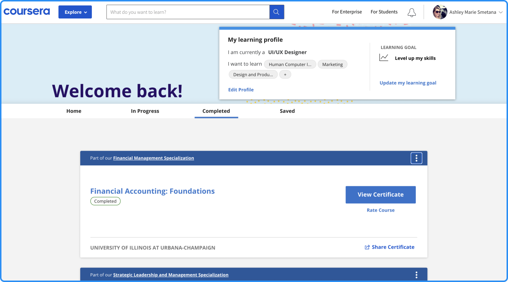
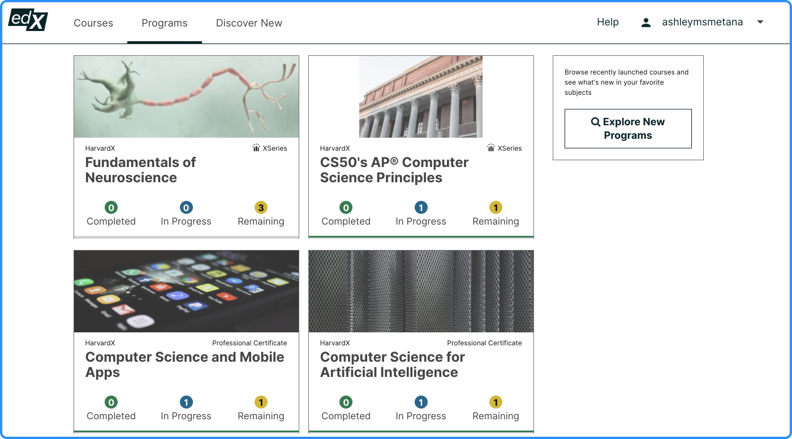
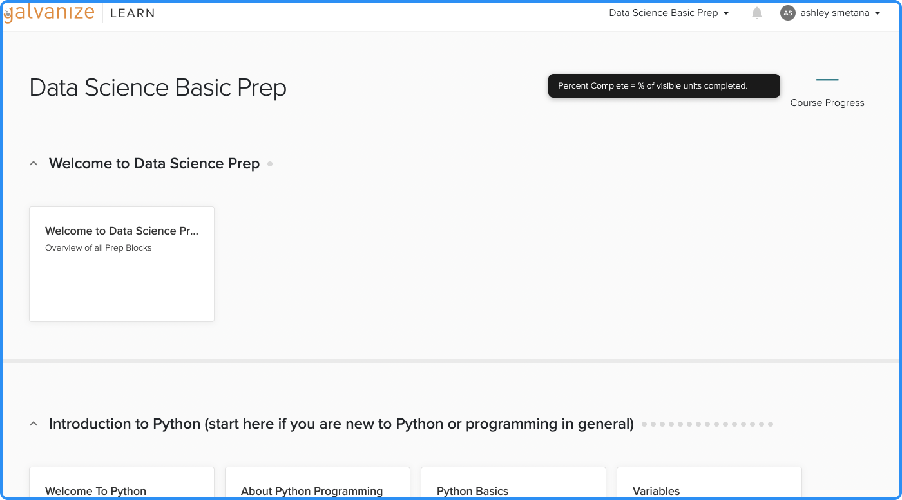
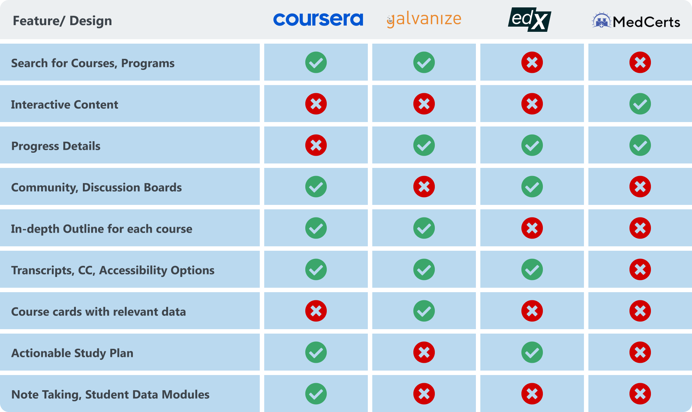
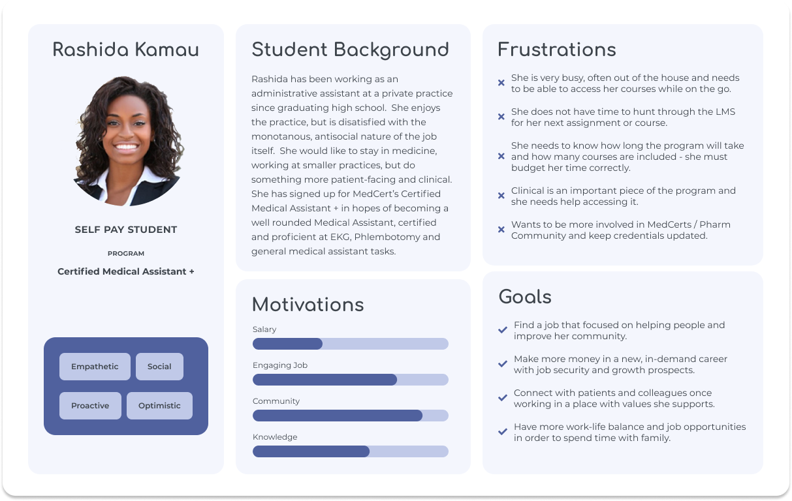
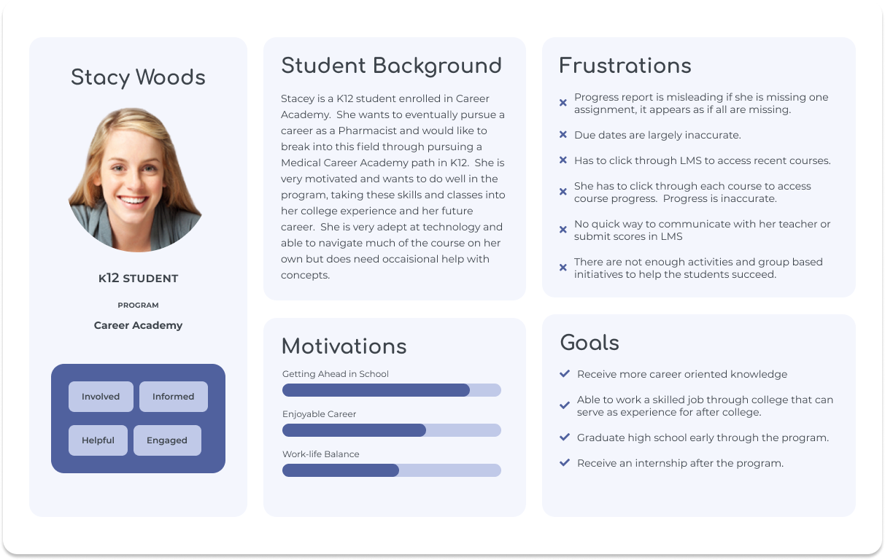
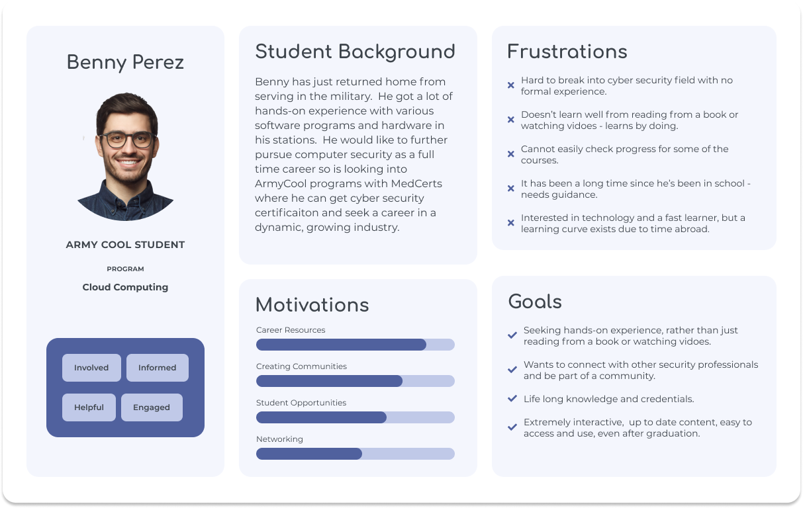

Design Principles
- Career Centric
- Progress Driven
- Transparent
Final Prototype
Problem
MedCerts is bringing in a new crop of students, more familiar with technology. They are drawn by MedCerts's commitment to an immersive, virtual program that will pave the way for in-demand jobs in healthcare. MedCerts's Learning Management System fails to deliver, and the entire student experience needs to be modernized.
Existing Learning Management System


Ethical Heuristic Evaluation: A Study in Transparency
Research
I started the process by undertaking a competitive analysis - looking at other online education products.
Competitor 1: EdEx
Competitor 2: Coursera
Competitor 3: Galvanize
In all three examples, courses and programs were clearly defined and progress was visible and clear.
Competitor Chart
Affinity Diagraming Stakeholder & Student Feedback
After my initial evaluations of the product and space, I started interviewing external and internal users to identify problems.

Core Issues with the LMS & Student Process
- Text Heavy
Stakeholders and users alike pointed towards the LMS functioning as nothing but a link repository, which relied on blocks of content to direct and teach students. - Navigation
Getting around the LMS was not cohesive. Navigating courses and programs was confusing and often mislead students. - Interactivity
Many of the elements within the LMS are static. Students are expecting an interactive experience. - Broken Processes
LMS has major accessibility issues. It is also lacking proper CC and transcripts. - Accessibility
Audit of information architecture is needed to reinstate hierarchies and normalize flows across the student experience.
Personas
User Personas
  Initial Designs
Initial ideations and iterations regarding LMS Design.
Initial MVP 1
Initial MVP 2
Usability Testing
We tested our designs on students and internal users alike in order to make some changes. With our final MVP, we also sourced users through usabilityhub.com to test usability and reception of general prospective users based on demographic information.
Responsivity
Utilizing interactive components within a mobile-first design approach, the student experience redesign is reponsive on all devices.
K12 User Addition
With Stride's acquisition of MedCerts, we had to incorporate K12 users and their special needs into our LMS redesign.
Final MVP
The final product will be released in installments, giving students a chance to adjust.
Features Release Schedule
Zero Height UI Kit and Style Guide